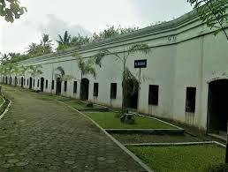

Sejarah dan Alasan Dibangun
Benteng Pendem Cilacap dibangun oleh pemerintah kolonial Belanda pada akhir abad ke-19, sekitar tahun 1861, dengan tujuan untuk mengamankan pelabuhan Cilacap yang strategis. Benteng ini dirancang dengan struktur segi empat, dinding tebal, dan menara pengawas di setiap sudut, serta dilengkapi dengan fasilitas pertahanan yang canggih untuk melindungi wilayah dan mengontrol jalur perdagangan penting di pesisir selatan Jawa.
Setelah kemerdekaan Indonesia, fungsi benteng sebagai fasilitas militer berkurang, dan kini Benteng Pendem Cilacap berfungsi sebagai objek wisata sejarah. Pengunjung dapat mengeksplorasi sisa-sisa bangunan dan menara, serta mempelajari lebih lanjut tentang masa kolonial Belanda dan perannya dalam sejarah lokal. Benteng ini juga sering digunakan untuk acara budaya dan kegiatan edukasi, menjadikannya sebagai salah satu situs bersejarah yang menarik di wilayah tersebut.
Lokasi Benteng Pendem
Benteng Pendem terletak di bagian tenggara kota Cilacap, ujung Timur Pantai Teluk Penyu di wilayah Kelurahan Cilacap. Di sekitar Benteng Pendem bagian Selatan adalah Samudra Indonesia, Selatan Selat Nusakambangan ( pintu masuknya kapal ke / dari Pelabuhan Alam Tanjung Intan ), sebalah Barat Kantor Pertamina Area 70, sebelah Utara tangki – tangki penampungan bahan minyak mentah Pertamina UP IV Cilacap yang berada di Area 70.
Untuk manuju ke Benteng Pendem dapat ditempuh dengan menggunakan berbagai jenis kendaraan. Dari terminal Bus dan Angkutan Kota ± 5 km, 2 km dari pusat Pemerintahan Kabupaten Cilacap dan 1 km dari Obyek Wisata THR Teluk Penyu. Kurang lebih 500 m dari Benteng Pendem adalah lingkungan masyarakat yang sebagaian besar mata pencahariannya adalah Nelayan baik yang menggunakan alat tradisional maupun yang menggunakan alat yang Modern.
HTM dan Fasilitas yang tersedia
Harga Tiket Masuk (HTM) untuk ke Benteng Pendemnya adalah Rp 7.500,00/orang. Untuk fasilitas yang ada di Benteng Pendem ini sendiri sudah cukup lengkap, seperti Mushola, Kamar Mandi, Gazebo, Taman Bermain, dan masih banyak lagi. Oleh karena itu, para wisatawan tidak perlu khawatir untuk berlama-lama di Benteng Pendem.
Isi yang ada di Benteng Pendem
Berikut merupakan bangunan di Benteng Pendem yang telah ditemukan
- Barak 14 kamar, yang di bangun pada tahun 1877, panjang 103 m, yang terdiri dari 14 kamar masing –masing kamar dengan ukuran 9,04 x 5,02 m, bentuk bangunan sama.
- Ruang Kesehatan / klinik yang dibangun pada tahun 1879 yang terdiri dari 2 ruangan dengan ukuran 8,74 x 3,75 m dan 5,24 x 3,77 m.
- Benteng Pertahanan jarak dekat ada 4 benteng yang terletak di 4 lokasi, 2 benteng berada dibagian Barat dan 2 benteng di bagian Timur jumlah keseluruhan panjangnya 329,92 m, terdapat 112 ruang – ruang tembak, 49 ruang perlindungan dan tempat penyimpanan senjata/musiu.
- Terowongan sepanjang 113,94 m lebar 3,10 m tinggi antara 2,45 – 4,88 m yang dibangun pada tahun 1868, didalam terowongan terdapat Ruang Perwira ukuran 20 x 8 m, ruang pengintai dengan bentuk setengah lingkaran ukuran 4,5 x 4,5 m tinggi 2,45 m.
- Ruang Amunisi / mesiu terdapat 2 lokasi yang terpisah masing – masing lokasi terdapat 3 ruangan berukuran 2,30 x 2,55 m tinggi 2,45 m.
- Ruang Penjara yang dibangun pada tahun 1861 sebanyak 3 bangunan yang terpisah masing – masing bangun penjara terdapat 3 ruangan berukuran 4,05 x 3,45 m tinggi 2,25 m, tebal tembok bagian depan setebal 2,50 m dan dua buah jendela ukuran 1 x 1 m.
- Ruang Senjata ada 3 ruangan berukuran 2,54 x 2,45 m, didalam ruang tengah bagian atas terdapat lubang yang digunakan untuk mengirim Amunisasi keatas ukuran 1 x 1 m.
- Ruang Akomodasi, panjang 25,45 m tinggi 5,10 m, di dalam ruang akomodasi terdapat 6 ruangan berukuran 2,54 x 2,45 m tinggi 2,45 m.
- Ruang Dapur, panjang 12,30 m tinggi 5,10 m terdapat 3 ruangan ukuran 2,54 x 2,45 m tinggi 2,45 m.
- Landasan Meriam, ada11 landasan dengan ukuran diameter 6,10 m, berada diatas bangunan Benteng, 6 landasan berada disebelah Timur dan 5 landasan berada disebelah Selatan.
- Benteng Pendem sebanarnya dikelilingi oleh parit, namun pada saat ini baru tergali sepanjang 518,75 m, lebar 10 m dibagian Barat, 20 m di bagian Timur.
- Bangunan / Benteng yang belum tergali diperkirakan 3 Benteng Jepang, 12 terowongan kecil dan sebagian parit.